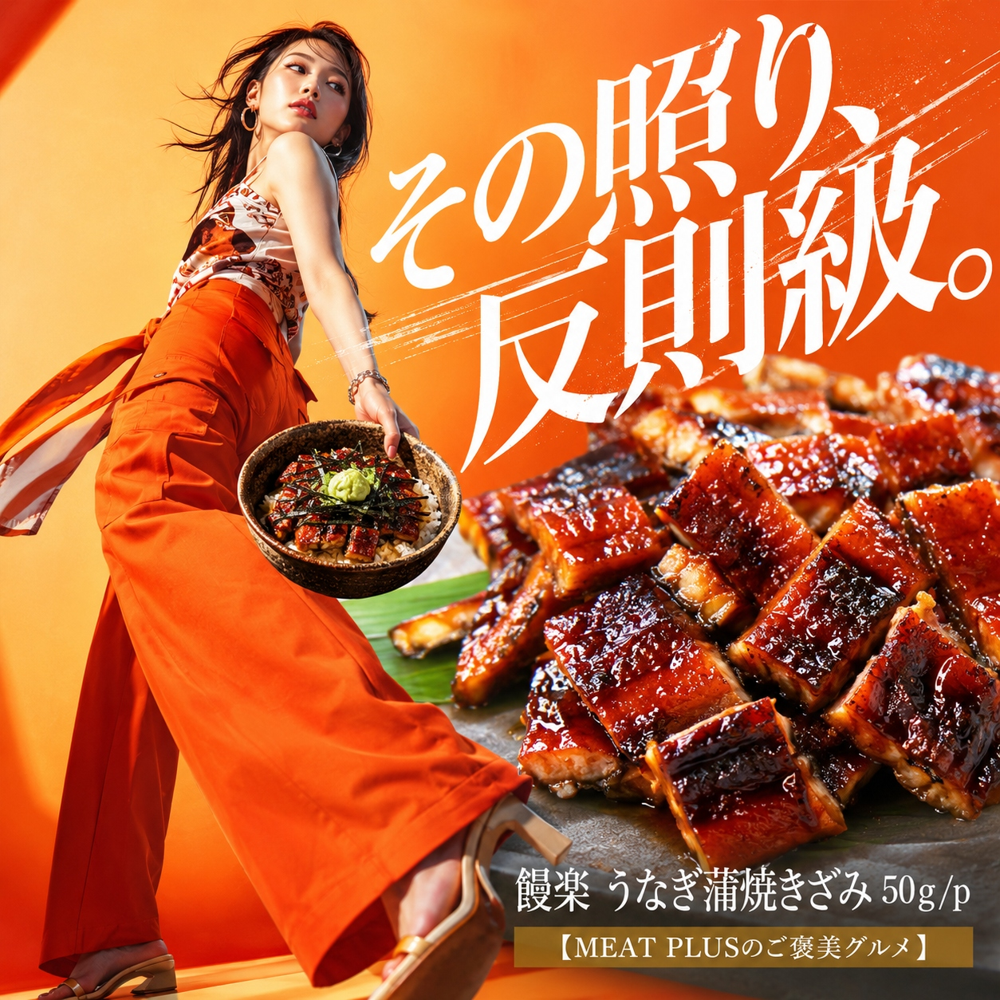
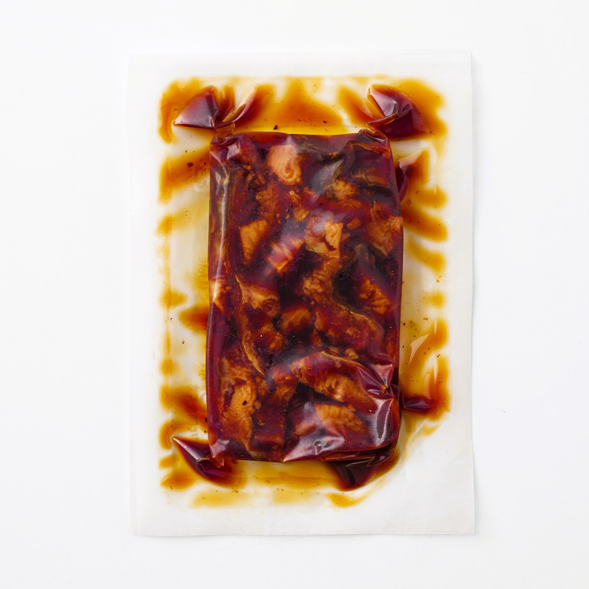
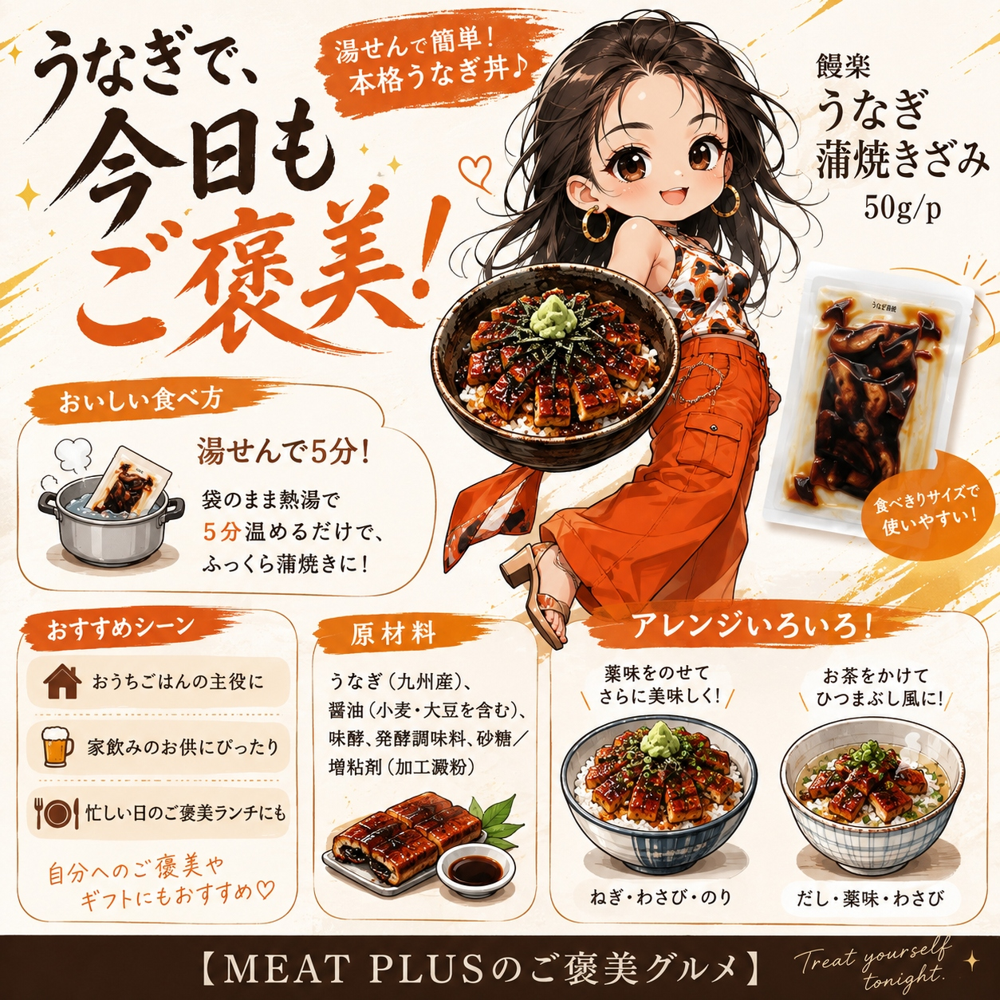

SCENE 01

j 海鮮・魚介類
【湯せん5分で本格ひつまぶし。九州産きざみうなぎ蒲焼き。】
温かいご飯の上にのせるだけで、ふっくらと香ばしい鰻の香りが立ち上る…そんな贅沢なひとときを、ご家庭で手軽に楽しみませんか？饅楽の「うなぎ蒲焼きざみ」は、厳選した九州産のうなぎを使用。職人が丹精込めて焼き上げた蒲焼きを、ご飯と絡みやすいように丁寧にきざみました。特製のタレが染み込んだ、本格的な味わいが自慢です。1食分にちょうど良い50gの使い切りサイズなので、食べたい時に食べたい分だけ無駄なく使えます。調理は冷凍のまま湯せんでわずか5分。定番のうな丼やひつまぶしはもちろん、ちらし寿司の具材、うまき（卵焼き）、お茶漬けなど、アレンジは自由自在。冷凍庫にストックしておけば、いつでも手軽に専門店の味が食卓を彩ります。饅楽のきざみうなぎで、日々の食卓を少し豊かにしてみませんか。
公式サイトへ移動します。価格・在庫・配送条件は移動先で最終確認してください。


PRODUCT INFORMATION
うなぎ蒲焼(うなぎ(九州産)、醤油(小麦·大豆を含む)、味酵、発酵調味料、砂糖/増粘剤(加工澱粉))
FAQ
冷凍のまま、袋を開けずに沸騰したお湯に入れて約5分間湯せんしてください。温めるだけですぐにお召し上がりいただけます。電子レンジでの解凍は、温めムラの原因となるためお勧めしておりません。
うなぎの蒲焼き自体に特製のタレがしっかりと絡めてありますので、追加のタレなしでも美味しくお召し上がりいただけます。お好みで、ご家庭の蒲焼きのタレや醤油を少量加えても風味が引き立ちます。
MEAT PLUS OFFICIAL SHOP
仕入れ・加工・梱包・発送まで自社で行うMEAT PLUSの公式オンラインショップでご注文いただけます。
公式オンラインショップで購入する